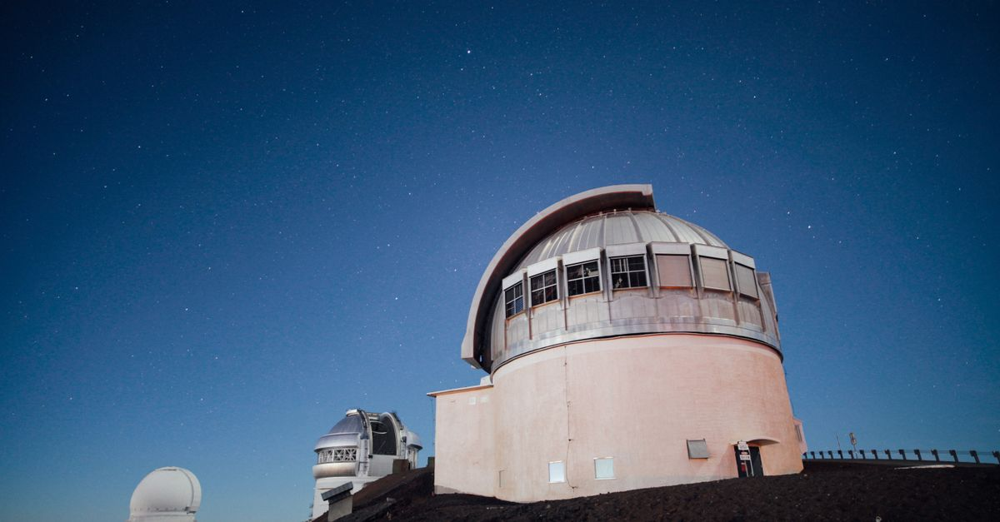
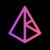
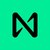

週次市場レポート2026年9月21日（月）
今週の3行まとめ
- 「利上げ＋法案否決」という二重の悪材料が出たのに、BTC は $74,913 で下げ止まり、V字反発で $84,000 台へ。
- 9/20（日）の週足終値 $81,159 で、50週移動平均線を45週ぶりに実線で奪回。「7月安値＝底」説が大きく前進しました。
- 急騰銘柄は先週の3件から21件へ。市場は「全面警戒」から「選別物色」へ位相が変わっています。
| 論点 | 結論（1行） |
|---|---|
| FOMC（9/16） | 25bp 利上げ（3.75〜4.00%・12-0 全会一致・2023年7月以来）。でも株の安値再テストは不発 |
| クラリティ法（9/15） | 49対50で否決。ただし市場の反応は抑制的で、SEC・CFTC が48時間で代替ルートを起動 |
| 週足判定（9/20） | 終値 $81,159 で50週線奪回。残る関門は $82,814 の週足維持（9/27 判定） |
| 警報器 | 金利「5%タッチ→即鎮火」／信用スプレッド 2.70% 不動／原油 $102.61→$97.07 へ減衰。4つ同時に緩んだ |
| ETF フロー | 9/15-16 に −$746M の投げ → 9/17-18 に +$592M の V字流入。週間ではプラス転換 |
| アルト市場 | 注目4銘柄すべて反発（ZEC +37%・HYPE は最高値更新中）。ただしアルトシーズン判定（75超）はまだ遠い |
答え合わせ — 3大イベントの結果と週足判定
先週のレポートで「答えが出る」と予告した3つのイベント、すべて結果が出ました。
シナリオの現在地（9/21 講師更新: 「もう底を打った」を 40% → 60% へ引き上げ）
見直しの背景と考え方は今夜の配信で講師から解説します。確率は投資判断の目安ではなく、相場環境を整理するための道具です。
利上げなのに、なぜ上がったのか — 4段の連鎖
「利上げ＝暗号資産は下がる」という連想が、今週は成立しませんでした。単独の理由ではなく、4つの力が順番に連鎖したという整理が複数の分析で共通しています。
- ① 織り込み済み
- 発表当朝の利上げ確率は 92.9%。サプライズ要素がなく、発表は不確実性を「追加」ではなく「除去」しました。相場の値動き自体も発表前に消化が進んでいました。
- ② ショート踏み上げ
- 下落に賭けていたポジションが反発で強制決済され、それが買い戻しをさらに呼ぶ連鎖に。9/18 の急騰時には1時間で約 $192M（うち売り方 $183M）が清算されました。
- ③ ETF 資金の即時回帰
- 9/15-16 の2日間で −$746M 流出した ETF マネーが、9/17 +$159.5M → 9/18 +$433M と即座に戻り、週間ではプラス転換。機関マネーは「投げてすぐ拾った」形です。
- ④ 50週線奪回のトレンド買い
- 歴史的な関門のクリアがテクニカル系の買いを誘発。統計上、50週線奪回後に新安値を付けなかったケースは 13回中11回（2011年以降・Galaxy Research 集計）。
警報器ダッシュボード — 4つ同時に緩んだ

黒い縦線が先週の位置、色付きバーが今週の位置です。今週の物語は「警報が一斉に緩み、それが V字反発の土台になった」。
外部リサーチの視点 — 「判定ウィンドウ」の答え合わせ

講師が定点観測している外部リサーチサイトは、2週間前に「今が底値の判定期間」という枠組みを提示していました。その枠組みと実際の結果を突き合わせます。
| 2週間前の枠組み | 実際に起きたこと | 判定 |
|---|---|---|
| 重要サポートが CPI と FOMC に耐えれば「7月安値＝底」が確定する | 25bp 利上げでも $74,913 で下げ止まり、V字反発 | 肯定側に大きく前進 |
| 利上げなら株主導で安値を再テストするおそれ | S&P500 は週間 −0.1% にとどまり、BTC は再テストどころか 50週線を奪回 | 弱気シナリオは不発 |
| 「50週線への最初の突破試行は通常失敗する」 | 2週連続で失敗した後、3週目で突破 | 経験則どおりの経過で通過 |
| 「CPI が前月と同水準なら利上げ確率が上がる」 | CPI 3.4% → 実際に利上げ実施 | 的中（市場が利下げを見込んでいた時期からの少数派の読み） |
同リサーチの次号（この2週間の総括号になる見込み）は本日時点で未公開です。公開され次第、来週の配信で扱う予定です。
今週の急騰銘柄 — 3件から21件へ
毎週恒例のスクリーニング（時価総額上位100位・7日間 +20% 以上）。先週の3件から今週は21件へ急増——「選別物色」への位相変化を裏付ける数字です。上位5件を深掘りします。

AKE Akedo+177.2%要因: 大手取引所への階段状上場（最終段は 9/16 の先物上場）とレバレッジの自己増幅。市場全体の反発では説明できない固有の急騰です。
見方: 教材として注目 最高値の翌日に一時 −72% のフラッシュクラッシュが既に発生。「急騰銘柄の裏側」を学ぶ生きた教材です。

NEAR+75.6%要因: 「価格 $3.33 の3日間維持で報酬が確定する」という目標埋め込み型のインセンティブ設計＋大手デリバティブ基盤との提携（9/17）。プライバシー銘柄の資金還流（ZEC 等）とも合流。
見方: 中間 施策駆動の色が濃い一方、提携プロダクトは恒常的。反落しても $3.33〜3.90 帯が観察ポイント。
要因: 大手銀行 Standard Chartered がカバレッジを開始し2030年末 $10 の長期目標を提示（9/16）。証券トークン化の基盤としての採用と収益分配が根拠。
見方: 材料は持続型 ファンダは継続性がある一方、短期指標は過熱圏。$0.19〜0.20 の維持が分水嶺です。
要因: 収益を買い戻しに充てる「フィースイッチ」の全会一致可決＋著名投資家の強気発言（9/20）で急加速。
見方: 期待先行の面あり 買い戻しの発動条件（USDe 供給 $7.5B）には未達。10/5 に投資家トークンの一括解除という需給イベントも控えます。
要因: 機関向け決済基盤 Paxos への統合（9/17）と、ステーキング条件を大幅緩和する「Helicon」アップグレード（9/22 実施）への期待。
見方: 明日が試金石 「噂で買って事実で売る」の出尽くしになるか、実施後の値持ちに注目です。
注目銘柄フォロー — 先週の全面安から全面反転
| 銘柄 | 先週 | 今週 | 1週変化 | 補足 |
|---|---|---|---|---|
 ETH ETH | $2,514 | $2,713 | +7.9% | ETH ETF は週間 −$140M で4週連続流入がストップ（機関は BTC 優先の選別） |
 LINK LINK | $11.39 | $13.03 | +14.4% | 先週の最弱（−13.2%）から最大級の戻り |
| HYPE | $80.05 | $95.35 | +19.1% | 史上最高値を更新中（$95.94 圏） |
| ZEC | $1,117 | $1,532 | +37.1% | 4銘柄中最強。時価総額9位を維持 |
アルトシーズン指数は 27 → 47 へ急上昇（75 超で「アルトシーズン」判定）。全面回復ではなく「選別物色」の段階です。※ 個別銘柄の記載は市場観察の記録であり、売買をすすめるものではありません。
来週に向けて — 監視ポイント
答えが出るイベント
- 9/27（日）の BTC 週足終値 — 構造転換ライン $82,814 を維持できるか。維持なら「底打ち説」の残る留保が外れます。
- 明日 9/22 AVAX の Helicon アップグレード — 実施後の値持ちが「期待先行かどうか」の試金石。
- 10/1 の2イベント — BTW のステーキング施策終了（前回終了直後は −12.7% の前例）と VVV の追加発行削減。「一過性か本物か」の判定週。
警報器の定点観測
- 10年金利 4.96% → 5% 再タッチの有無
- 信用スプレッド 2.70% → 3% 接近が出たら質的変化
- 原油 $97.07 → パイプライン修理の続報。$90 割れなら警報解除を検討
そのほか
- 外部リサーチの次号（判定ウィンドウの総括号）
- ETF フローの本格流入転換の有無・ETH ETF の流出が続くか
- アルトシーズン指数 47 からの続伸（75 超で判定）
- クラリティ法否決後の行政ルート（SEC 特例の適用第1号・CFTC ルールの審査結果）